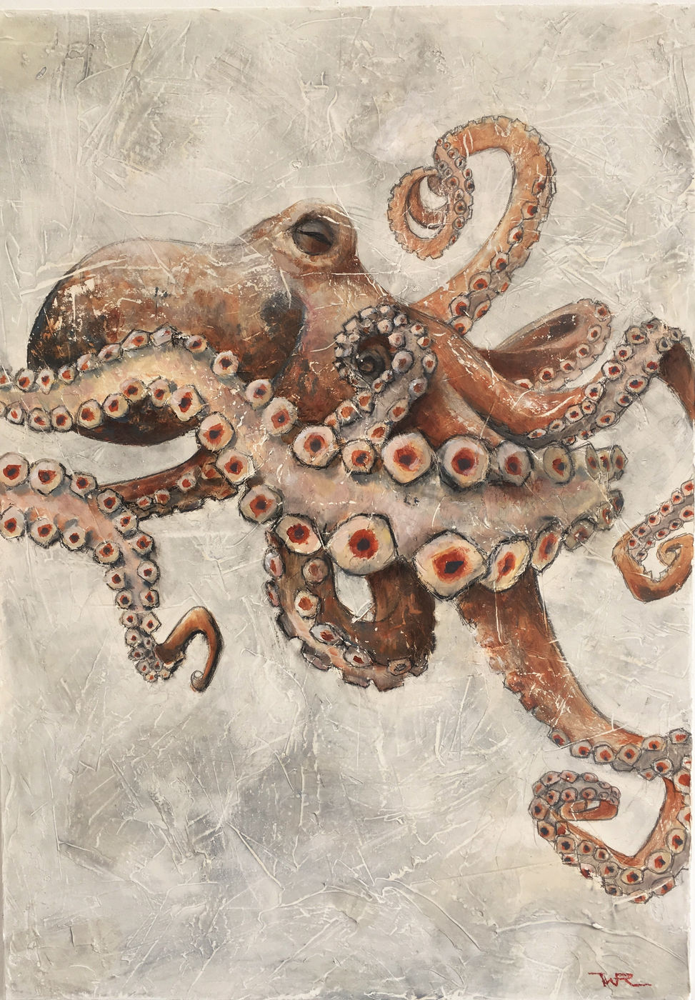
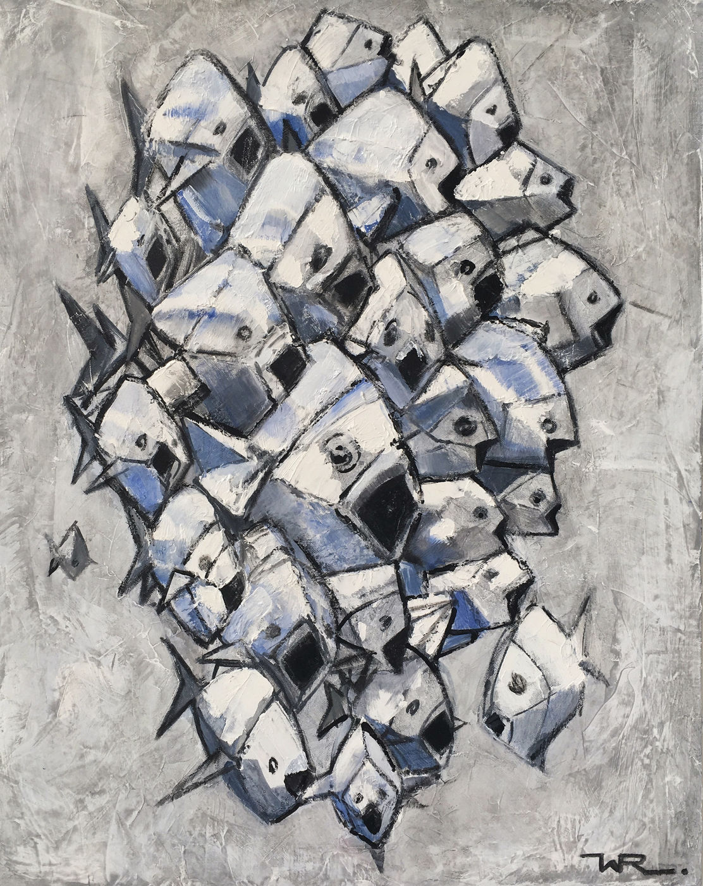
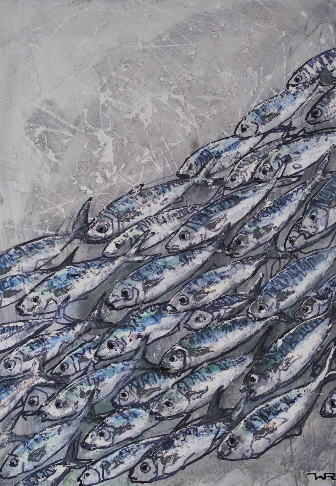
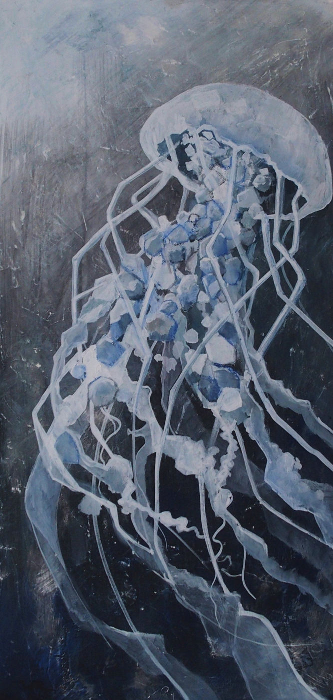
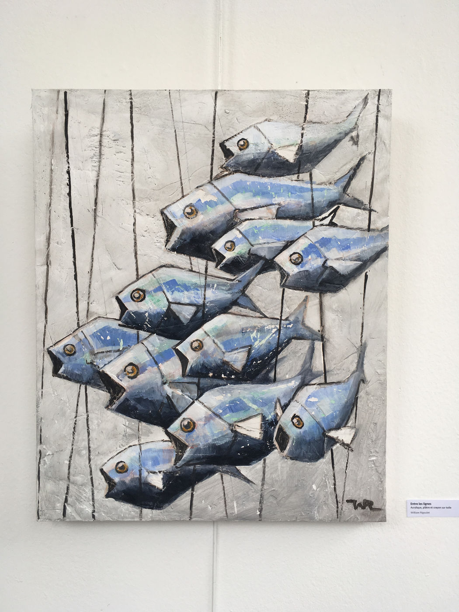
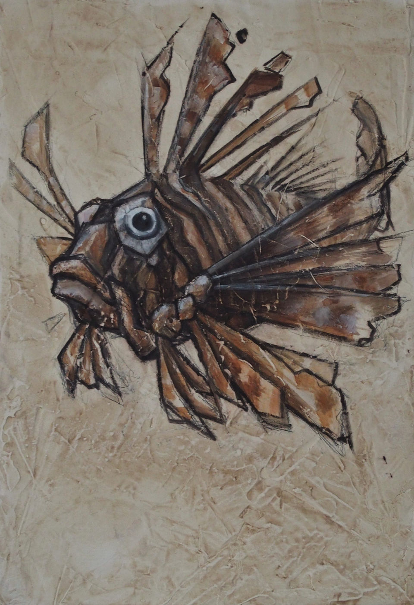
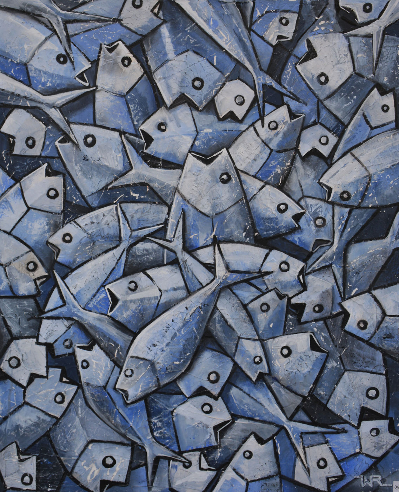

← Retour au menu Fine ArtFine Art · 8 œuvres 
Retour de pêcheAcrylique et plâtre TentaculesAcrylique et plâtre Un pour tousAcrylique et plâtre Échappée belleAcrylique et plâtre MedusaAcrylique et plâtre Entre les lignesAcrylique et plâtre Le roi LéonAcrylique et plâtre Retour de pêche IIAcrylique et plâtre
Lignes animales
Bestiaire graphique en acrylique et plâtre, entre mouvement et matière.













